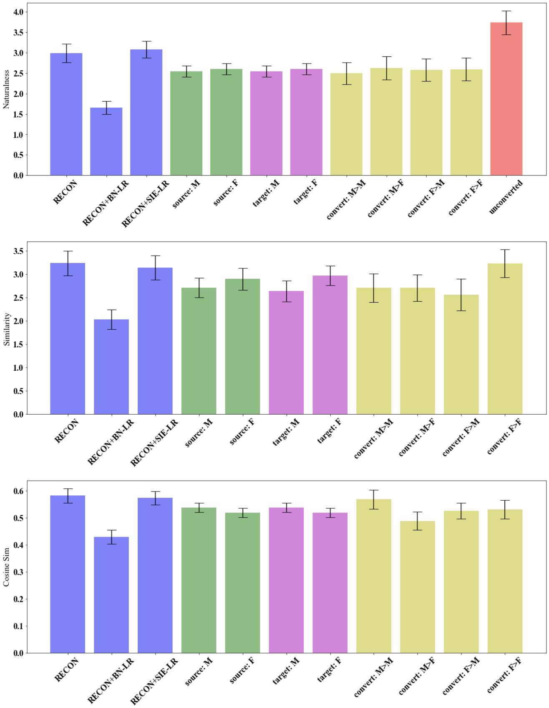

This page presents SVC audio from our research on singing voice conversion, as detailed in our SMC 2023 submitted paper, A Comparative Analysis of Latent Regressor Losses for Singing Voice Conversion.
To illustrate the upperbound quality of our generated audio, the table below presents original audio recordings in the left column, while the right column presents the same recording (without a converted singing technique) when resynthesized using the pretrained Wavenet vocoder. This demonstrates the artefacts and deterioration due to resynthesis alone, and therefore provides an indication of the upperbound audio quality in this context:
The audio files presented here have been generated by our AutoVC network implementation. which incorporates a latent regressor loss w.r.t. singer indentity embeddings instead of bottleneck encodings. It was trained on the entire DAMP dataset.
It was also conditioned on midi note vectors coorresponding to the source singer's pitch contour. This was generated by Crepe, converted to midi notes and reformatted to one-hot vectors for conditioning.
The table below presents a comparison between source, singer and converted voice singing clips, generated by our proposed model:
As we have pitch-matched our source-target pairs, we are aware that compared to other research in this field, it may sometimes sound like we have chosen a pair with similar timbre. Singers were however, randomly selected (with restrictions to ensure all gender-pair conditions were covered). To present singing voice conversions that are more comparable to other research, we have omitted the pitch matching algorithm in the examples below, and used a pitch-shifting algorithm to match the source singer octave to the target singer, as done in Nercessian 2020.
This table presents results when using the M1 model, which was trained on all three datasets using the path optimised for MedleyDB: